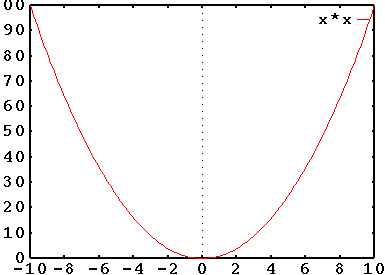
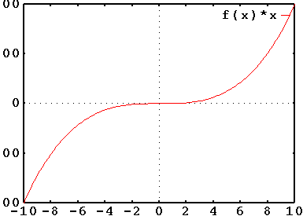
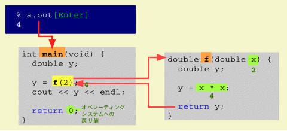

講義に入る前に shori2 にカレントディレクトリを移しておいてください。
キーボードからタイプした文字や数値を変数に入れることができます。
#include <iostream.h>
main() {
int tate, yoko;
cin >> tate >> yoko; // tate と yoko をキーボードから入力
cout << "縦 " << tate << " メートル、";
cout << "横 " << yoko << " メートルの長方形の面積は ";
cout << tate * yoko << " 平方メートル" << endl;
} |
このプログラムをコンパイルして実行すると、 止まってしまったように見えます。 これは cin >> tate >> yoko のところで変数 tate と yoko に入れるデータの入力を待っているからです。この cin は入力ストリームと呼ばれ、 標準入力（キーボード）からデータを入力する オブジェクトを示しています。 >> は入力ストリームからデータを取り出す 抽出演算子です。
では、キーボードをタイプして、数値を二つ入力してみましょう。
% a.out[Enter] 10[Enter] 20[Enter] 縦 10 メートル、横 20 メートルの長方形の面積は 200 平方メートル |
一つ一つの数値の区切りは改行（[Enter]）の他、 スペースやタブなどの空白文字でも構わないので、 次のように入力することもできます。
% a.out[Enter] 10 20[Enter] 縦 10 メートル、横 20 メートルの長方形の面積は 200 平方メートル |
しかし、 データを入力するときに止まってしまったように見えると、 このプログラムを使う人が悩んでしまうかも知れません。 そこで今どういうデータの入力を待っているのかを表示するようにしてみましょう。 こういう表示を プロンプト（入力促進記号）といいます。
#include <iostream.h>
main() {
int tate, yoko;
cout << "縦の長さは何メートルですか？";
cin >> tate;
cout << "横の長さは何メートルですか？";
cin >> yoko;
cout << "縦 " << tate << " メートル、";
cout << "横 " << yoko << " メートルの長方形の面積は ";
cout << tate * yoko << " 平方メートル" << endl;
} |
"（二重引用符）は全角文字（”）ではなく半角文字 (") を使ってください。 このプログラムをコンパイルして実行すると、次のようになります。
% a.out[Enter] 縦の長さは何メートルですか？10[Enter] 横の長さは何メートルですか？20[Enter] 縦 10 メートル、横 20 メートルの長方形の面積は 200 平方メートル |
ちょっとイタズラをして、 このプログラムに数値ではないものを入力してみましょう。
% a.out[Enter] 縦の長さは何メートルですか？aho[Enter] 横の長さは何メートルですか？縦 0 メートル、横 nan0xf2fc40fa メートルの 長方形の面積は nan0x7fffffff 平方メートル |
なんかムチャクチャなことになりましたね。 「縦の長さ」に "aho" を入れて改行した瞬間、 「横の長さ」を入れる間もなくでたらめな答えを出してしまいました。 このように入力ストリーム cin から抽出演算子 >> を使ってデータを入力するときは、 入力データのデータ型がデータを格納する変数のデータ型と一致していないと、 期待した動作をしてくれません。
しかし、人間はミスをするものです。 たとえプログラムを作る人が「ここは数値を入力するところだ」と決めていても、 プログラムを使う人がその通りにしてくれるとは限りません。 そこでプログラムを作るときは、そういうことも想定しておく必要があります。 ところが抽出演算子 >> を使って数値を変数に直接入力すると、 そういう配慮をしたプログラムを作るのが面倒になってしまいます。 このため普通は入力されたものを文字列のまま変数に格納し、 あとで数値への変換を行います。この方法は後述します。
二つの倍精度の実数値をキーボードから入力し、 それらの和、差、積、商を求めるプログラムを作成してください。 ユーザインタフェースは下のようになるようにしてください。
% a.out[Enter] x= 10[Enter] y= 20[Enter] x+y= 30 x-y= -10 x*y= 200 x/y= 0.5 |
メールにソースプログラムを添付して tokoi まで送ってください。Subject:（件名）は kadai6 としてください。
数学の関数は、例えば f(x) = x2 と定義されているとき、 f(2) = 4, f(3) = 9 になります。 すなわち、 パラメータとして与えた値を定義された式で計算した値と等しいもの として扱います。

したがって、g(x) = f(x) * x と言うように、 定義した関数を別の関数定義の中で利用することもできます。

C++ 言語においても、 関数はなんらかのデータを得て、 それを処理し、 なんらかの結果を返します。 これが C++ 言語のプログラムの単位になります。 結果を返す関数は、 定数や変数と同様に値を持つものとして扱われます。 数学の関数と違うところは、 その定義が手続きであるところです。
f(x) や g(x) を C++ 言語の関数として表せば、 次のようになります。
double f(double x) {
double y;
y = x * x;
return y;
}
double g(double x) {
double y;
y = f(x) * x;
return y;
} |
関数 g(x) は関数 f(x) を評価してその値を求め、 それに仮引数 x をかけたものを自分自身の値としています。 このように関数も変数同様、値を持ちます。 この値を関数の戻り値と言います。 関数 f(x) および g(x) の左の double はこの戻り値のデータ型、 すなわちこの関数自体のデータ型を示します。 また関数は、 それを利用している場所より前で宣言（定義）されている必要があります。 上の例では f(x) は g(x) より前で宣言されていなければなりません。
main() も一つの関数です。
#include <iostream.h>
int main(void) {
double y;
y = f(2);
cout << y << endl;
return 0;
} |
この例は引数に 2 を与えて関数 f() を呼び出し、 その戻り値を y に代入した後、 y を出力するという関数 main() を定義しています。 main() の最後の return 0; は、main() の戻り値を 0 にすることを意味します。 この値は、この関数を評価して（呼び出して）いるところ （オペレーティングシステム）に戻されます。 main() 関数のデータ型は int です。

プログラムを実行すると、 オペレーティングシステムは最初にこの関数 main() を評価します。 すると main() の中身が、上から順に評価されていきます。
y = f(2); が評価されると関数 f() が呼び出され、 その仮引数 x を 2 に設定して、 f() の中身が上から順に評価されていきます。
return y; を評価すると、y の値を f() の戻り値に設定し、f() を呼び出した main() に戻ります。
関数 main() が return 0; で終了しているので、main() を評価した値は 0 になります。 オペレーティングシステムはこれを 終了ステータスに設定して、 プログラムを終了します。
この main のような名前を関数名といいます。 関数名の付け方は 変数名と同じです。 ただし main は、上で述べたように オペレーティングシステムがプログラムの実行を開始するときの 目印として使いますから、 プログラム中に一つだけ存在する必要があります。
上の例で示した関数 f(x) と g(x) を使って、 キーボードから入力した数値の２乗および３乗を出力するプログラムを作ります。 下のプログラムの main() 関数に中身を書いてください （/* ～ */ に挟まれた部分は コメントです）。
#include <iostream.h>
double f(double x) {
return x * x;
}
double g(double x) {
return f(x) * x;
}
int main(void) {
/*
この部分にプログラムを書いてください。
*/
return 0;
} |
ユーザインタフェースは次のようにしてください。
% a.out[Enter] x= 10[Enter] x^2= 100 x^3= 1000 |
メールにソースプログラムを添付して tokoi まで送ってください。Subject:（件名）は kadai7 としてください。
三角関数など様々な関数が最初から用意されています。 このような関数をライブラリ関数と言います。 三角関数のような算術関数を使用するときは、 それを使っている場所より前に #include <math.h> を置いてください。
#include <iostream.h>
#include <math.h>
int main(void) {
cout << sin(1.5707963268) << endl;
return 0;
} |
この例では、 main() から cos() という関数を呼び出し、 それに 1.5707963268（≒π/2）というデータを与えています。 このように関数に与えるデータのことを引数（ひきすう）と呼びます。 sin() は引数に与えられたデータの正弦を戻り値として返します。
ライブラリ関数はプログラム中では定義していませんが、 これはリンク のときにライブラリファイルから取り出されて、 main() 関数と結合されます。
このプログラムの最初にある、
#include <iostream.h> #include <math.h> |
は、別のディレクトリ（/usr/include や /usr/include/CC）にある iostream.h や math.h というファイルをソースファイルのこの位置に埋め込みます。
新しい C++ コンパイラには名前空間という概念が追加されており、 #include <iostream> のようにファイル名の拡張子 ".h" を書かない場合があります。
この講義では使用しません。
iostream.h には cin、cout などの入出力ストリームを扱うオブジェクトの定義が記述されています。 また math.h には三角関数 sin()、cos()、tan() のほか、平方根を求める sqrt()、 自然対数を求める log()、指数関数 exp()、べき乗 pow() など、 様々な算術関数の定義が記述されています。
なお、算術関数を使用するときは、コンパイル（リンク）の際に CC コマンドに -lm というオプションを付ける必要があります。
% CC program.cc -lm[Enter] |
借金を debt、利率を interest、返済回数を n としたとき、 月々の返済額 payment は次の式で計算することができます。
payment = debt * interest / (1 - (1 + interest)-n)
debt, interest, n を入力すれば、 月々の返済額を計算してくれるプログラムを作ってください。 xy は pow(x, y) で計算できます。
メールにソースプログラムを添付して tokoi まで送ってください。Subject:（件名）は kadai8 としてください。
自分でも関数を作ることができます。 自分で関数を作ることで、 プログラムを複数の部分に分割することができます。
#include <iostream.h>
void sub1(void) {
cout << "関数sub1を実行しています。" << endl;
}
void sub2(void) {
cout << "関数sub2を実行しています。" << endl;
}
int main(void) {
cout << "関数mainを実行しています。" << endl;
sub1();
sub2();
cout << "関数mainが終了しました。" << endl;
return 0;
} |
この例では、 main() の中から sub1() と sub2() を順に呼び出しています。
次のプログラムをコンパイルして実行すると、 止まらなくなってしまいます。 その理由を考察して、 tokoi にメールで送ってください。 Subject:（件名）は kadai9 としてください。 ソースファイルを添付する必要はありません。
なお、実際にプログラムをコンパイルして実行する必要はありません。 もし実行してしまったなら、Ctrl-C をタイプして強制終了してください。 また core ファイルができてしまったら削除してください。
#include <iostream.h>
void sub(void) {
cout << "関数subを実行しています。" << endl;
sub();
}
int main(void) {
cout << "関数mainを実行しています。" << endl;
sub();
cout << "関数mainが終了しました。" << endl;
return 0;
} |
関数にデータを渡すには、引数を用います。 下の例では main() において関数 add() に 10 と 20 の二つの引数を与えてそれを呼び出しています。 関数 add() 内では二つの変数 a, b にそれぞれ 10 と 20 が入っています。
#include <iostream.h>
void add(int a, int b) {
// a, b は仮引数
cout << a << '+' << b << '=' << a + b << endl;
}
int main(void) {
add(10, 20); // 10, 20 は実引数。10→a、20→b に渡される
return 0;
} |
関数が引数を受けとるときは、 関数名（上では add）に続く ( ～ ) 内に 引数を受け取るデータ型と変数名の対をコンマで区切って列挙します。 この変数を仮引数と呼びます。
次のように、仮引数の並びが void のときは、 この関数が引数を使用しないことを表します。
void sub(void) {
...
} |
一方、 関数を呼び出すときに実際に与えるデータを実引数と呼びます。 仮引数と実引数のデータ型は一致させておいてください。 一致していなくても両方が数値データなら自動的に変換されるのでエラーにはなりませんが、 例えば実引数が double で仮引数が int のときは、double → int の変換によって精度が落ちる場合があります。
仮引数には実引数の値が複写（コピー）されます。 したがって関数内で仮引数の値を変更しても実引数は変更されません。 これを引数の値渡しと言います。
関数内での仮引数の変更を実引数に反映したいときは、 仮引数に &（アンパーサント）を付けて宣言します。
void sub(int &x, int &y) { // ← x, y に & を付ける
...
x = ... ; // 仮引数 x の内容を変更
y = ... ; // 仮引数 y の内容を変更
...
} |
これを引数の参照渡しと言います。 参照は「リファレンス」とも言います。 仮引数が参照渡しで宣言されている場合は実引数に値が戻される場合があるので、 実引数は変数にしてください。 定数や式を渡した場合はコンパイラが一時的な変数を作成して値をそれに代入し、 この変数を実引数に使います（警告が出ます）。
下のプログラム中の関数 swap() は、 与えられた二つの引数の内容を交換するものです。
#include <iostream.h>
void swap(int x, int y) {
int t; // 交換のために一時的に値を待避しておく変数
cout << "引数を交換" << endl;
t = x;
x = y;
y = t;
}
int main(void) {
int a = 1, b = 2;
cout << "a=" << a << ", b=" << b << endl;
swap(a, b); // a→b、b→a となるよう交換
cout << "a=" << a << ", b=" << b << endl;
return 0;
} |
しかし、このままではこのプログラムをコンパイルして実行しても、 main() 二つの変数 a, b の内容は交換されていません。
% a.out[Enter] a=1, b=2 引数を交換 a=1, b=2 （←交換されていない！） |
関数 swap() が main() で与えられた実引数の内容を交換するよう、 関数 swap() を修正してください。 メールに修正したソースプログラムを添付して tokoi まで送ってください。Subject:（件名）は kadai10 としてください。
関数からは、戻り値を使って 関数を呼び出した側にデータを返すことができます。
#include <iostream.h>
/*
** 引数に与えられた整数の和を返す関数の定義
*/
int add(int a, int b) {
int c;
c = a + b;
return c; // 結果を返す。return a + b; でも可。
}
/*
** メイン関数の定義
*/
int main(void) {
int i, j, k;
i = 10;
j = 20;
k = add(i, j); // 関数 add() の戻り値を k に代入。
return 0;
} |
return に続く式の値が、その関数の戻り値になります。
int add(int a, int b) {
return a + b;
} |
関数は戻り値によって呼び出した側に値を返すことができるので、 呼び出した側では関数を定数や変数と同様に式の中で使用できます。 関数 add() を次のように使うこともできます。
... k = add(10, 20) * 3; // (10 + 20) * 3 ... |
main() 関数の戻り値はプログラムの 終了ステータスになります。
int main(void) {
...
return 0; // 0 は正常終了を示す終了ステータス
} |
戻り値がある関数は、 戻り値のデータ型を関数自身の型として宣言しておく必要があります。
int add(int a, int b) { // add は int 型
int c;
...
return c; // c も int 型
} |
戻り値の型が省略された関数は int 型だとみなされます。
main(void) { // main() は int 型
...
return 0; // 0 は int 型 の定数
} |
戻り値のない関数は、 そのことを明示するために void 型として宣言しておくべきです。
void sub(void) {
cout << "Hello" << endl;
} |
void sub(void) {
cout << "Hello" << endl;
return;
} |
上の二つは同じです。 関数中に return が無ければ、 その関数の終りでこの関数を呼び出している所に戻ります。
return は関数の途中に書くこともできます。
int main(void) {
sub1();
return 1; // ここでプログラムが終わってしまう
sub2();
return 0;
} |
この場合、関数 sub2 は実行されません。
次のプログラム中の関数 add() と mul() は、それぞれ引数に与えられた二つの実数の和と積を返す関数です。
#include <iostream.h>
double add(double x, double y) {
return x + y;
}
double mul(double x, double y) {
return x * y;
}
int main(void) {
cout << /*____ここにプログラムを書いてください____*/ << endl;
return 0;
} |
この二つの関数を使って 10 + 20 * (30 + 40) を計算し、結果を表示するプログラムを作ります。 main() 関数のコメントの部分を式で置き換えてください。 もちろんこの式には + や * といった演算子を使ってはいけません。 答えはこの式を自分の頭で計算するとき、 どういう順番で計算するか考えれば分かると思います。
メールにソースプログラムを添付して tokoi まで送ってください。Subject:（件名）は kadai11 としてください。
引数の数やデータ型が異なれば、 同じ関数名で異なる関数を定義できます。 これを関数の 多重定義（オーバーローディング） と言います。ただし戻り値の型の違いで多重定義することはできません。
#include <iostream.h>
void output(double x) {
cout << x << " は double の値です" << endl;
}
void output(int x) {
cout << x << " は int の値です" << endl;
}
int main(void) {
int a = 10;
double b = 10.0;
output(a);
output(b);
return 0;
} |
このプログラムでは引数のデータ型が異なる二つの output() という関数を定義しています。 これをコンパイルして実行すると、次のような出力が得られます。
% a.out[Enter] 10 は int の値です 10 は double の値です |
二つの output() が引数のデータ型で使い分けられています。
なお、main() 関数の多重定義はできません。